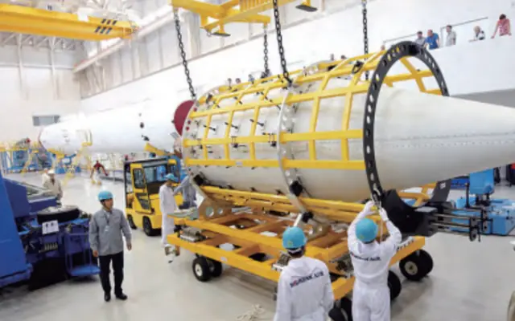
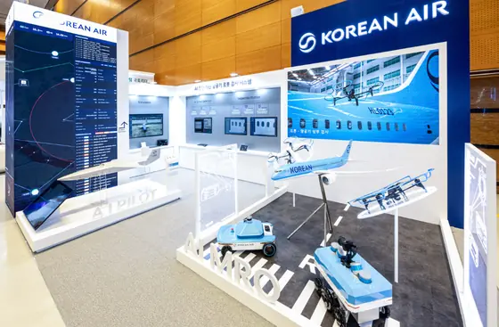

Korean Air Aerospace · Since 1977
One intelligence moves every aircraft
From unmanned systems to commercial and military aircraft — the world’s only airline that builds aircraft designs, builds and sustains them.
Korean Air Aerospace · Since 1977
From unmanned systems to commercial and military aircraft — the world’s only airline that builds aircraft designs, builds and sustains them.
01Unmanned Systems
From Korea’s first type-certified UAV to the MUAV, the multi-role stealth UAV and the Low-Observable Unmanned Wingman, we develop and produce unmanned systems in-house.
02Aerostructures
A risk-sharing partner to Boeing and Airbus on next-generation commercial programs, designing and building wing and fuselage structures.
03MRO & Upgrade
For more than 50 years, we have performed depot maintenance and upgrades on Republic of Korea and U.S. military aircraft — now pursuing the UH-60 upgrade and the Korean EW aircraft R&D program.
Urban air mobility, in-space transportation and physical AI — development programs and partnerships now under way.
Building on our work in UAM Team Korea, we are co-developing eVTOL operations platforms and military AAM with global partners.

After final assembly of the NARO launch vehicle and work on the Koreasat-1 program, we are moving into in-space transportation with orbital transfer vehicles (OTVs).

We are developing Digital MRO — drone and rover swarms that inspect aircraft autonomously — along with AI-enabled UAVs and aerial targets.
Linked articles are published in Korean on the Korean Air Newsroom.
We welcome proposals for co-development and collaboration in aerostructures, unmanned systems, MRO & upgrade and next-generation technologies.
CareersJoin our team · View job openings